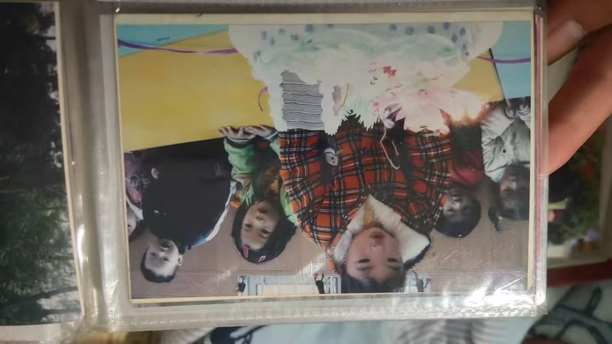
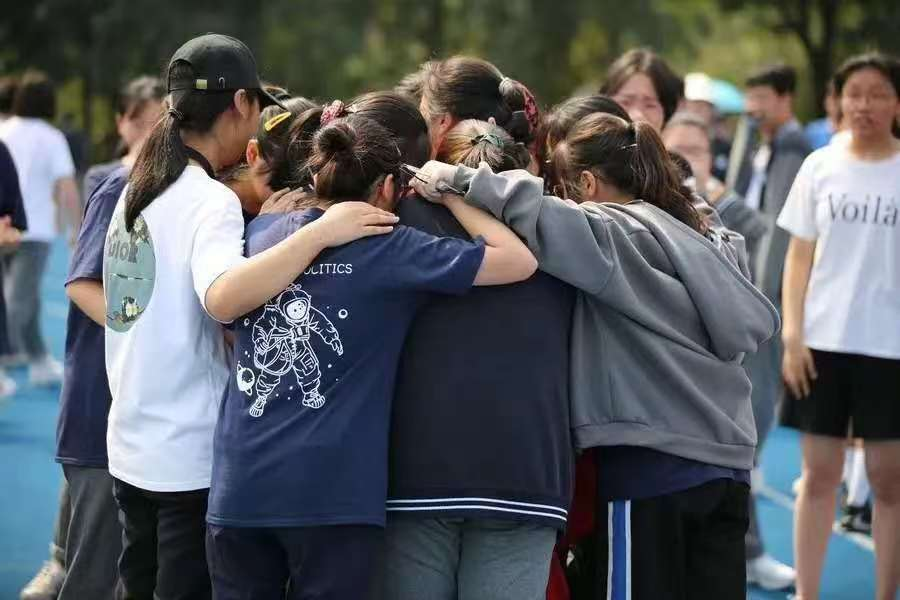
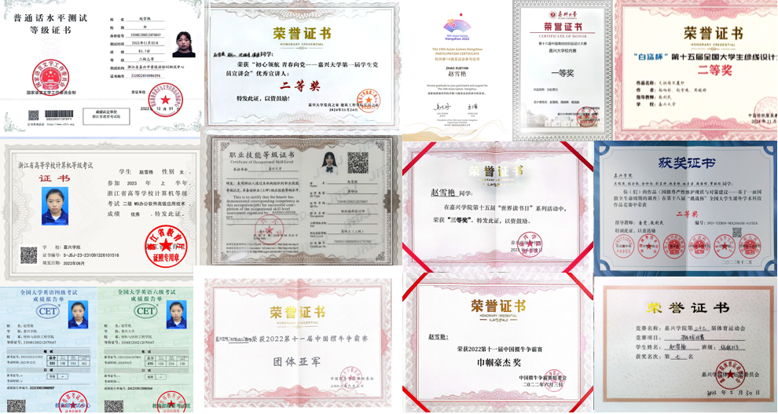
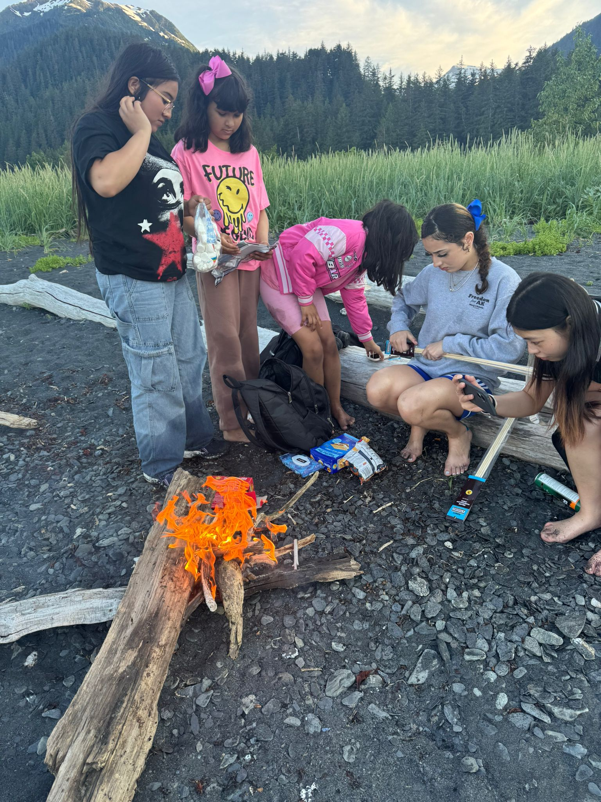
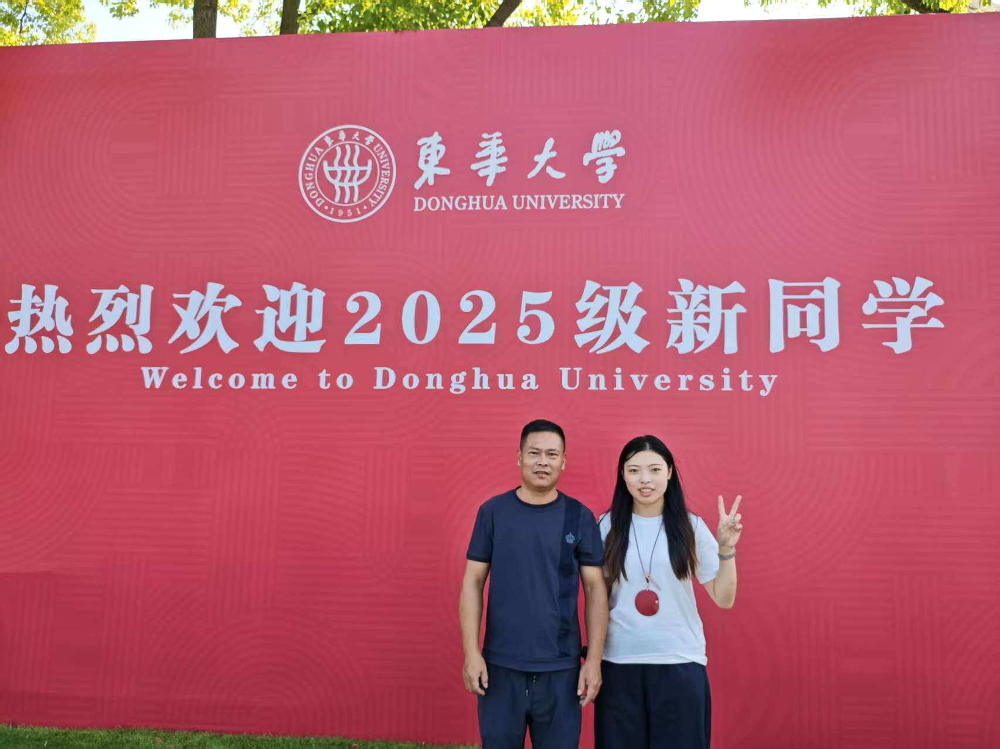
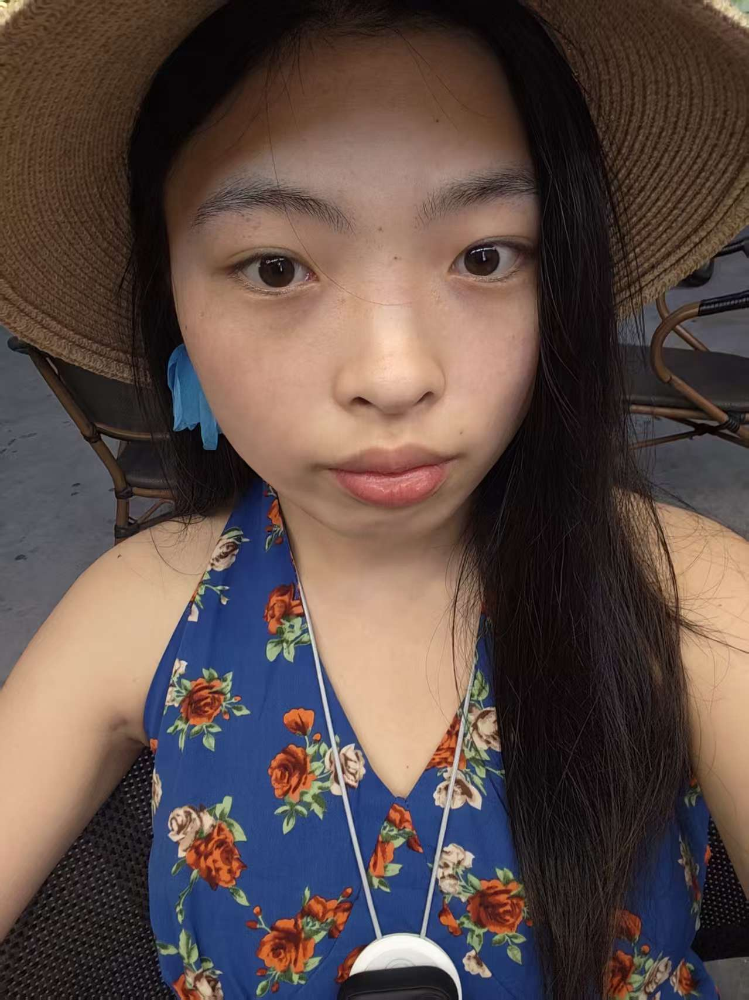

赵雪艳
留下存在的痕迹 | 即使再小的帆也能远航
时光轴
节点1：2002-2009 出生-学前教育
我总共上过两次学前班，第一次学前班听奶奶说只有三天，因为幼稚园的老师觉得我很调皮，那次我似乎放学一个人走在了河边，大人们都很着急，最后是舅舅找到了我，给我劈头盖脸一顿骂，自此我一直很怕他，直到我读大学。
第二个幼稚园里有一个老师奶奶，她与前一个幼稚园的老师不一样，他十分喜欢我，可以说她最喜欢我了，在我生日的时候会给我买新衣服穿，这是独一份的宠爱，有一张照片是生日当天，扎着两个小啾啾，嘴巴嘟嘟的，在吹生日蜡烛。

我也的确是个调皮的孩子，在那个幼稚园里，我至今记得那个午睡房间里浓郁的木头气息，我经常不好好睡午觉，爬到床底下去冒险，那种偷摸的刺激感令我着迷，地板上即使有灰尘也玩的不亦乐乎。
我还记得那个幼稚园内部有个小花园，但不经常开放，那里似乎成为了我通向外面世界唯一的地方，那里长满野草野花，阳光照射下来我觉得无比平静，不认为很危险，反倒觉得没人管我的自由感，因为我知道我总会被发现而逃出生天。
每次去上幼稚园，奶奶总会在街上的蛋糕冷饮店，给我买一个五块钱大鸡腿，或者一袋塑料袋封装的甜豆浆，用吸管扎入袋子上端就可以喝了，但这也是个技术活，由于袋子的韧性不容易被扎破。前面独宠我的老师奶奶也会帮我把豆浆放在冷水里降温了再给我喝。
在村里里我算是朋友最广的了，那时候一天的行程也是很满，大家都喜欢和我玩，每次都要预约才可以，而我可以选择我想去哪就去哪，去完他家要去别家，但我又不想把时间浪费在转移战场上，每次都是跑着去跑着来。村里的老太婆总喜欢叫我们野孩子。
节点2：2009-2018 小学阶段
小时候到处奔跑去玩，让我在体育方面有了比同龄女孩强的力量，先是加入了校田径队，参加过一次县运动会，但成绩不算特别突出。那时候训练我们都是最早到学校的学生，六点多就到了，还记得早上都是先训练再吃早饭，早饭是学校食堂专门准备的，感觉到了优待，早饭通常是白粥和小肉包，那时候喜欢喝稀的白粥，因为练完往往很渴，我至今还记得那白粥烫的难以下嘴，但我的胃已经嗷嗷待哺。后面离开田径队是因为跟着一个小男孩不学好，觉得训练辛苦就吊儿郎当，他成功离开了，然后我也离开了。
还记得在三年级前，我经常报名参加运动会，其中跳远每次都是千年老二，第一名总是另一个女孩。
在小学的前几年，学校还比较破，灌木丛也多，我们经常在灌木丛中穿梭，寻找西瓜虫，把它蜷起来，变成一粒小球。
五年级下册的时候机缘巧合加入乒乓球队，那时候我们班有一个同学从小就练乒乓球，最后我们组获得女子团体第一，我个人获得第二名，差点就打败他了。最后还拿到一笔奖金。
节点3：2015-2018 初中阶段
对于初中，我最引以为傲的就是我的学习成绩，一开始进入初中，年级排名好像是一百十几名，后面真的是一点一点进步，稳步提升，最后考到了我们县最好的高中。刚入学我的英语老师就提到中考黑马，没想到我自己也成为了那匹黑马。英语老师自己的个人经历也是非常励志，英语都是自学的，姐姐资助他的生活费用。
节点4：2018-2021 高中阶段
高三快高考的那段时间，所有人的精神状态都很神经，晚自习下课就去操场疯，我们玩的游戏是打架、摔跤很暴力的游戏，那时候我们班总共四十几个人，才四个男生。
由于班里只有四个男生，导致我们运动会直接取消团体接力资格。我们班最后派出四个女生比赛，原先是五男五女，最后冲刺感觉全校人都在为我们欢呼。

节点5：2021-2025 大学阶段
拿过许许多多的奖项，但现在觉得只要做自己喜欢的事情，认可自然会到来。

大学最特别的经历莫过于参加了SWT项目，在美国阿拉斯加待了三个月，遇到了Ruth一家，带我到处去玩。

节点6：2025-2028 研究生在读
爸爸陪我开学来报道，新的征程开启。

自己一个人去惠州三天两晚冲浪，认识了外贸四人，让我想做外贸。认识了晓庆教练，让我知道了原来工作不一定是在办公楼，你可以做你爱做的事情，寻找乌托邦，晓庆教练的生活是我向往的样子。

个人思考
“不要试图改变一个人”
研一开学，老师说我要主动思考。但我有我自己的节奏，不想被强行修正。我有我不被改变的自由。
学习日志
自学外贸知识，试图构建属于自己的外贸事业体系。
在惠州尝试冲浪，在教练帮助下可以成功在板上站起。
在海边的沉思。

人生计划
🌍 潜水
去菲律宾潜水旅游
🎯 射击
尝试一次实弹射击
⛷️ 滑雪
学习滑雪